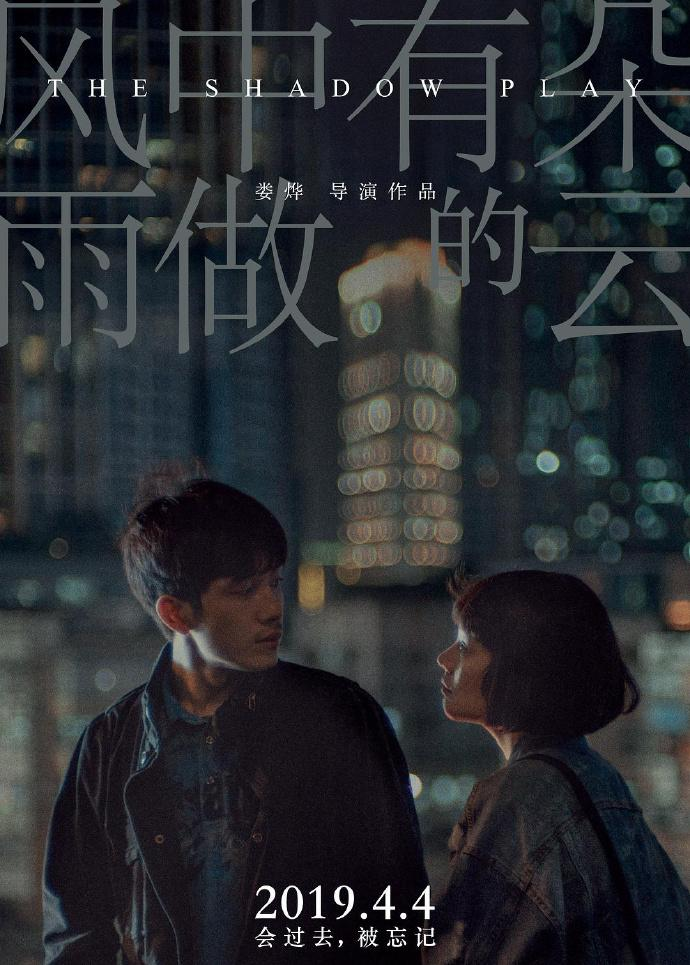

AryanKHの电影推荐
No.1 -------风中有朵雨做的云

简介：城建委主任唐奕杰（张颂文 饰）在动员钉子户搬迁现场坠楼身亡，年轻警官杨家栋（井柏然 饰）负责调查此案，因此结识了唐奕杰的妻子林慧（宋佳 饰）和女儿唐小诺（马思纯 饰）。通过唐小诺，杨家栋得知唐奕杰和林慧之间的感情并不和睦，不仅如此，林慧还曾患有精神分裂症。唐奕杰生前和紫金企业的负责人姜紫成（秦昊 饰）交往甚密，而林慧亦曾是姜紫成的女友，除此之外，姜紫成的合伙人连阿云（陈妍希 饰）一直下落不明，这一切都和唐奕杰一家人有着密不可分的关联。在林慧和姜紫成的算计之下，杨家栋不仅身败名裂还背负上了杀人的罪名无奈逃亡香港，但他对凶手的追踪却并没有画上休止。